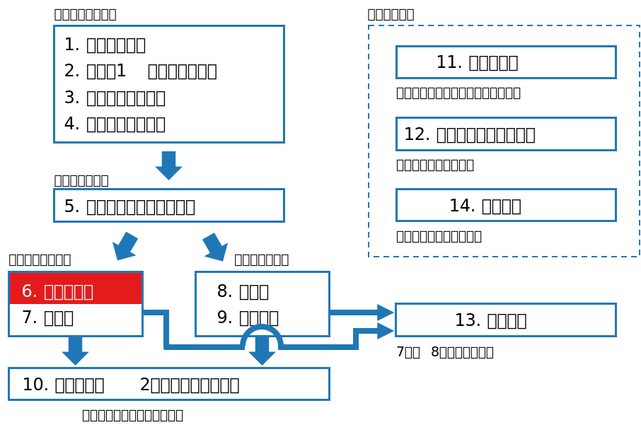

class: middle, center # 数理統計学特論I<br>第6回 十分統計量 奥 牧人 (和漢研) 2022/??/?? --- # 前回の復習 前回の目的 * 推定と検定を統一的に扱うための理論的枠組みを理解すること 前回の達成目標 * 損失関数の意味を説明できる。 * 決定関数の意味を説明できる。 * リスク関数の意味を説明できる。 * ミニマックス基準の意味を説明できる。 --- # 今回の位置付け  --- # 今回の目的と達成目標 目的 * 十分統計量とその関連用語の意味を理解すること 達成目標 * 十分統計量の意味を説明できる。 * 十分統計量の分解定理を説明できる。 * ラオ・ブラックウェルの定理を説明できる。 * 完備十分統計量の意味を説明できる。 --- # 予習用キーワードの確認 * 十分統計量 --- # Outline 1. 十分統計量の定義と分解定理 2. 統計的決定理論における十分統計量 3. 完備十分統計量 4. 最小十分統計量 --- # Outline 1. **十分統計量の定義と分解定理** 2. 統計的決定理論における十分統計量 3. 完備十分統計量 4. 最小十分統計量 --- # 十分統計量 * 例えば、正規分布の母平均 $\mu$ を推定したいとする。 * このとき、標本平均 $\bar X$ だけ分かれば十分であり、個々の $X_i$ の値は無視しても $\mu$ の推定には影響がなさそうである。 * [十分統計量の定義] $k$ 個の統計量 $T=(T_1,\ldots,T_k)$ がパラメータ $\theta$ に関する $k$ 次元の十分統計量であるとは、$T$ を与えたときの $X=(X_1,\ldots,X_n)$ の条件付き分布が $\theta$ に依存しないことである。 --- # 例 * $X_1,\ldots,X_n\stackrel{i.i.d.}{\sim}Bin(1,p)$ とする。 * 統計量 $Y=\sum_{i=1}^n X_i$ について考える。 * 直感的には $Y$ が分かればパラメータ $p$ に関する情報としては<br>十分と考えられる。実際に条件付き確率を計算すると、 $$\begin{align}p(x_1,\ldots,x_n|y)&=\frac{p(x_1,\ldots,x_n,y)}{p(y)}=\frac{p(x_1,\ldots,x_n)}{p(y)}\\\\\\\\&=\frac{p^y(1-p)^{n-y}}{\left(\begin{array}{c}n\\\\y\end{array}\right)p^y(1-p)^{n-y}}=\left(\begin{array}{c}n\\\\y\end{array}\right)^{-1}\end{align}$$ となり、確かに $p$ に依存していないことが分かる。 --- # 分解定理 * より簡単に十分統計量であることを示す方法がある。 * [分解定理] 統計量 $T$ がパラメータ $\theta$ の十分統計量であるための必要十分条件は、$X=(X_1,\ldots,X_n)$ の確率質量関数または確率密度関数 $p(x)$ が <div>$$p(x)=g(T,\theta)h(x)$$</div> の形に分解出来ることである。ただし $h(x)$ は $\theta$ を含まない。 * $h(x)=1$ でも良い。先ほどの例でいうと、 $$p(x)=p^y(1-p)^{n-y}=g(y,p)\times 1$$ --- # 正規分布の例 * $X_1,\ldots,X_n\stackrel{i.i.d.}{\sim}N(\mu,\sigma)$ のとき <div>$$\begin{align}p(x)&=\prod_{i=1}^n\left(\frac{1}{\sqrt{2\pi}\sigma}\exp\left(-\frac{(x_i-\mu)^2}{2\sigma^2}\right)\right)\\&=\frac{1}{(2\pi)^{n/2}\sigma^n}\exp\left(-\frac{n(\bar x-\mu)^2}{2\sigma^2}-\frac{\sum_{i=1}^n(x_i-\bar x)^2}{2\sigma^2}\right)\end{align}$$</div> 従って、 <div>$$T_1=\bar X,\quad T_2=\sum_{i=1}^n(X_i-\bar X)^2$$</div> とおけば $T=(T_1,T_2)$ は十分統計量 (この場合も $h(x)=1$) --- # $h(x)\neq 1$ の例 * $X_1,\ldots,X_n\stackrel{i.i.d.}{\sim}Po(\lambda)$ のとき <div>$$p(x)=\prod_{i=1}^n\frac{e^{-\lambda}\lambda^{x_i}}{x_i!}=e^{-n\lambda}\lambda^{\sum_{i=1}^n x_i}\left(\prod_{i=1}^n x_i!\right)^{-1}$$</div> ここで <div>$$\begin{align}g(T,\lambda)&=e^{-n\lambda}\lambda^{\sum_{i=1}^n x_i}\\ h(x)&=\left(\prod_{i=1}^n x_i!\right)^{-1}\end{align}$$</div> とみなせば、$T=\sum_{i=1}^n x_i$ が十分統計量 --- # Outline 1. 十分統計量の定義と分解定理 2. **統計的決定理論における十分統計量** 3. 完備十分統計量 4. 最小十分統計量 --- # 統計的決定理論における十分統計量 * 十分統計量はパラメータ $\theta$ に関する十分な情報を含んでいる。 * 決定関数 $\delta$ も、十分統計量 $T$ の関数 $\delta(T)$ の場合だけ考えれば良さそうである。 * 実際に、任意の $\delta(X)$ に対して、確率化決定関数を許せば、リスクが同等の $\delta^*(T)$ が常に存在する $$R(\theta,\delta)=R(\theta,\delta^*),\quad \forall\theta$$ --- # ラオ・ブラックウェルの定理 * リスク関数として平均二乗誤差を仮定 $$R(\theta,\delta)=E[(\theta-\delta)^2]$$ * ある決定関数 $\delta(X)$ に対して、以下の決定関数を作る $$\delta^*(T)=E[\delta(X)|T]$$ * ラオ・ブラックウェルの定理 $$R(\theta,\delta^*)\leq R(\theta,\delta),\quad\forall\theta$$ 等号成立は $P(\delta(X)=\delta^*(T))=1$ のときのみ --- # 証明 * $R(\delta,\theta)$ を書き直すと <div>$$\begin{align}E[(\delta-\theta)^2]&=E[(\delta-\delta^*+\delta^*-\theta)^2]\\&=E[(\delta-\delta^*)^2]+E[(\delta^*-\theta)^2]+0\\&\geq E[(\delta^*-\theta)^2]=R(\delta^*,\theta)\end{align}$$</div> * ただし、2行目で期待値の繰り返しの公式と $E[\delta|T]=\delta^*$ を使った <div>\begin{align}E[(\delta-\delta^*)(\delta^*-\theta)]&=E^T[E[(\delta-\delta^*)(\delta^*-\theta)|T]]\\&=E^T[(\delta^*-\theta)E[(\delta-\delta^*)|T]]\\&=0\end{align}</div> --- # Outline 1. 十分統計量の定義と分解定理 2. 統計的決定理論における十分統計量 3. **完備十分統計量** 4. 最小十分統計量 --- # 完備十分統計量 * 統計量 $T(X)$ が完備であるとは、以下が成り立つこと $$E[g(T)]=0,\quad\forall\theta\quad\Rightarrow\quad g(T)\equiv 0$$ * 言い換えると、期待値が同じ関数は一意に定まる $$E[g_1(T)]=E[g_2(T)],\quad\forall\theta\quad\Rightarrow\quad g_1(T)\equiv g_2(T)$$ * 詳しくは次回話すが、完備十分統計量 $T$ を使った不偏推定量 $\delta(T)$ は一意に定まり、不偏推定の中で最も良いものとなる。 --- # 指数型分布族 * 指数型分布族 $$p(x,\psi)=h(x)\exp\left(\sum_{j=1}^k\psi_j T_j(x)-c(\psi)\right)$$ * 指数分布とは無関係 * 分解定理より $T=(T_1,\ldots,T_k)$ は十分統計量 * $\psi=(\psi_1,\ldots,\psi_k)$ を自然母数と呼ぶ * [定理] $\psi$ の属する母数空間が $k$ 次元ユークリッド空間の開集合であり、$T$ の共分散行列が正則のとき、$T$ は完備である。 --- # 例 * 2項分布を指数型分布族の形に変形する $$\left(\begin{array}{c}n\\\\x\end{array}\right)p^x(1-p)^{n-x}=\left(\begin{array}{c}n\\\\x\end{array}\right)\exp\left(\log\frac{p}{1-p}x+n\log(1-p)\right)$$ * 指数型分布族 (再掲) $$p(x,\psi)=h(x)\exp\left(\sum_{j=1}^k\psi_j T_j(x)-c(\psi)\right)$$ * この場合 $k=1$ で、$\psi_1=\log(p/(1-p))$, $T_1(x)=x$ に対応 * 従って、$x$ は完備十分統計量 --- # 正規分布の例 * $X_1,\ldots,X_n\stackrel{i.i.d.}{\sim}N(\mu,\sigma)$ のとき <div>$$\begin{align}p(x)&=\prod_{i=1}^n\left(\frac{1}{\sqrt{2\pi}\sigma}\exp\left(-\frac{(x_i-\mu)^2}{2\sigma^2}\right)\right)\\&=\frac{1}{(2\pi)^{n/2}\sigma^n}\exp\left(-\frac{\sum_{i=1}^nx_i^2}{2\sigma^2}+\frac{\mu\sum_{i=1}^nx_i}{\sigma^2}-\frac{n\mu^2}{2\sigma^2}\right)\\&=\exp\left(-\frac{\sum_{i=1}^nx_i^2}{2\sigma^2}+\frac{\mu\sum_{i=1}^nx_i}{\sigma^2}-\frac{n\mu^2}{2\sigma^2}-\frac{n}{2}\log(2\pi\sigma^2)\right)\end{align}$$</div> * 従って、$T_1(x)=\sum x_i$, $T_2=\sum x_i^2$ は完備十分統計量 --- # Outline 1. 十分統計量の定義と分解定理 2. 統計的決定理論における十分統計量 3. 完備十分統計量 4. **最小十分統計量** --- # 最小十分統計量 * 例えば、コインを $2n$ 回投げ、前半の $n$ 回の表の数を $Y_1$, 後半の $n$ 回の表の数を $Y_2$ とする。 * $(Y_1,Y_2)$ は十分統計量だが、$Y=Y_1+Y_2$ だけで十分 * 十分統計量 $T$ が以下の性質を満たすなら、弱い意味で最小十分 * $U=g(T)$ が十分統計量$\quad\Rightarrow\quad$ $g$ が $1$ 対 $1$ (単射) * 十分性を失うことなく $T$ の情報を縮約することが出来ない * 十分統計量 $T$ が以下の性質を満たすなら、強い意味で最小十分 * 任意の十分統計量 $S$ に対して $T=h(S)$ となる $h$ が存在 * 任意の十分統計量の情報を $T$ に縮約出来る --- # 完備十分統計量と最小十分統計量 * 完備十分統計量は、弱い意味で最小十分統計量である。 * 強い意味の最小十分統計量が存在する場合、弱い意味の最小十分統計量は強い意味の最小十分統計量になる。 * その場合、完備十分統計量は強い意味でも最小十分になる。 --- # まとめ 十分統計量とその関連用語の意味を説明しました。 1. 十分統計量の定義と分解定理 <span class="times">!</span> 十分統計量の意味を説明できる? <span class="times">!</span> 十分統計量の分解定理を説明できる? 2. 統計的決定理論における十分統計量 <span class="times">!</span> ラオ・ブラックウェルの定理を説明できる? 3. 完備十分統計量 <span class="times">!</span> 完備十分統計量の意味を説明できる? 4. 最小十分統計量 --- # 小テスト * Moodleで小テストに回答して下さい。 * **期限は今週中** (日曜の23:59まで) とします。 * 繰り返し受験して構いません。最高得点で成績をつけます。 --- # 次回の予習用キーワード * 不偏推定 * 尤度関数